目录(?)[-] 1.Weblogic的集群 2.创建Weblogic集群前的规划 3.开始创建我们的Weblogic集群 1.1 创建集群的总控制端aminserver 2.2 创建集群中的节点mycluster1 mycluster2 3.3 如何启动集群 4.jdbc集群 5.把工程布署到集群环境中去 6.使用Apache与Weblogic集群整合 7.JMS集群
本文转摘于；http://blog.csdn.net/liuqiwen0512/article/details/7739421
一、Weblogic的集群
还记得我们在第五天教程中讲到的关于Tomcat的集群吗?
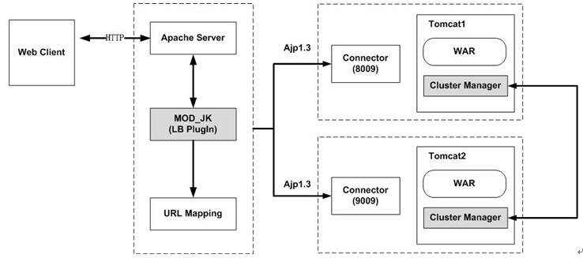
两个tomcat做node即tomcat1, tomcat2，使用Apache HttpServer做请求派发。
现在看看WebLogic的集群吧，其实也差不多。
区别在于：
- Tomcat的集群的实现为两个物理上不同的tomcat，分别就是两个node，没有总控端，没有任何控制台可言（只有通过比较简陋的http://localhost:8080/manager/html，或者是http://localhost:9090/manager/html）来对每个tomcat节点进行监视（此处只有monitor没有control）；
如果我们要布署我们的Web应用，需要分别手工往每个Tomcat的webapp目录里拷贝文件。
- Weblogic的集群必须设立一个总控端，可从上图中看出，然后这个总控端我们把它称为AdminServer，然后在其下可以挂weblogic的集群的node，这个node不是物理上不同的两个weblogic，而是不同的domain，我们假设domain1, domain2为两个weblogic的集群的节点。
如果我们要布署我们的Web应用，只需要在总控端布署一次，然后挂在这个总控端下的节点将会自动将我们的web应用发布到每一个节点。
因此，要实现weblogic的集群必须：
- 安装Weblogic
- 创建一个AdminServer的domain
- 在AdminServer上建立集群总控端
- 分别创建每一个要加入此集群总控端的node，也是一个个的domain
二、创建Weblogic集群前的规划
根据第一节中的内容，我们将我们用于实验的Weblogic规划成3个domain，每个domain都包含有下列的必不可少的属性：
- AdminConsole（总控端）
逻辑名
物理名(domain的系统路径)
端口号
计器名(IP)
登录信息(username/password)
- Cluster node1（集群节点1）
逻辑名
物理名(domain的系统路径)
端口号
计器名(IP)
登录信息(username/password)
- Cluster node2（集群节点2）
逻辑名
物理名(domain的系统路径)
端口号
计器名(IP)
登录信息(username/password)
我们用表格列出我们将要创建的集群中总控端与每个节点的集息：
|
物理名 |
逻辑名 |
端口号 |
主机名（IP） |
登录信息 |
|
\bea\user_projects\domains\adminserver |
AdminServer |
7001 |
localhost |
weblogic/password_1 |
|
\bea\user_projects\domains\server1 |
mycluster1 |
7011 |
localhost |
weblogic/password_1 |
|
bea\user_projects\domains\server2 |
mycluster2 |
7012 |
localhost |
weblogic/password_1 |
规划好了，就可以开始来创建我们的集群了。
三、开始创建我们的Weblogic集群
3.1 创建集群的总控制端（aminserver）
Windows:
Windows下通过菜单->OracleWeblogic->Weblogic Server 11gR1->Tools->Configuration Wizard来启动创建domain的wizard。
Unix/Linux：
Unix/Linux下通过
|
cd /bea/wlserver/common/bin ./config.sh |
来启动创建domain的wizard。
选择“创建新的Weblogic域”，选下一步（下面全部跟着我的操作步骤与界面填选的参数走，所有的用户名啦、密码啦、端口号啦、IP啦，都请根据第一节中的那个表格里的参数填写）
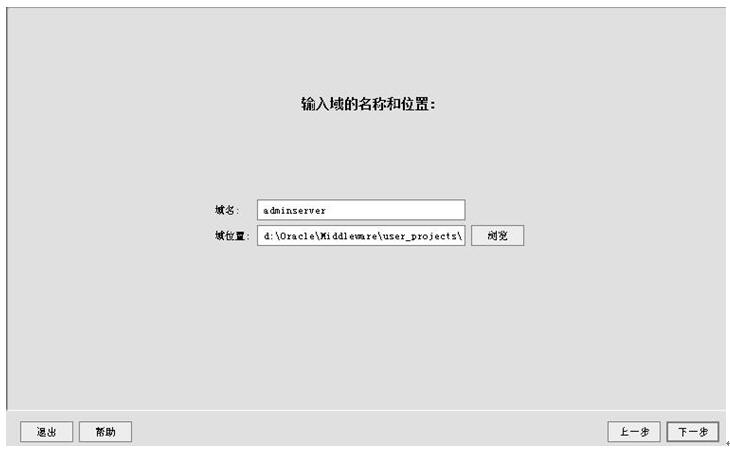
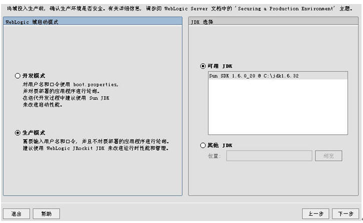
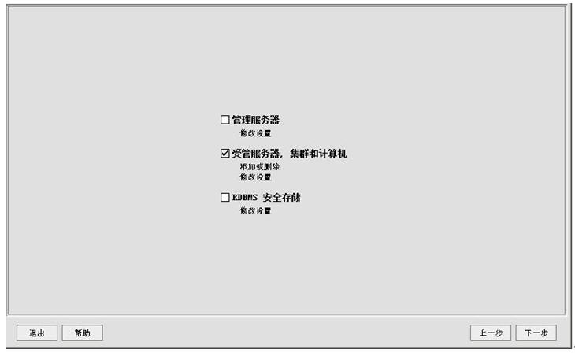
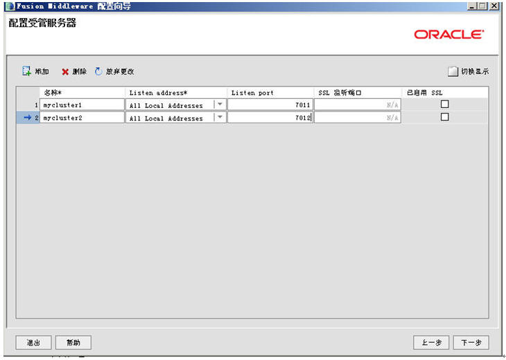
下一步后界面类似，但是是有区别的，注意了哦，不要下手太快了
上面这个配的就叫集群广播地址的界面。
因为集群是通过广播（有unicast和multicast两种）来同步集群中的节点，并且把每个节点中的session通过这个广播地址来进行复制和同步，即主控域不断的时时刻刻的会和它下面的子节点间保持通讯、经常去询问各个子节点的。
- 名称：可以任意
- 集群信息传送模式：有unitcast与multicast两种，在11G版本前都是multicast10G后开始支持unicast协议。如果指定了multicast，就必须指定一个“多点传送地址”，此地址和端口都可以采用weblogic默认的。
如果在域环境，还需要在防火墙中配置这个“多点传送地址”与“多点传送端口”，使其在防火墙中被打开，协议为both of tcp and udp。
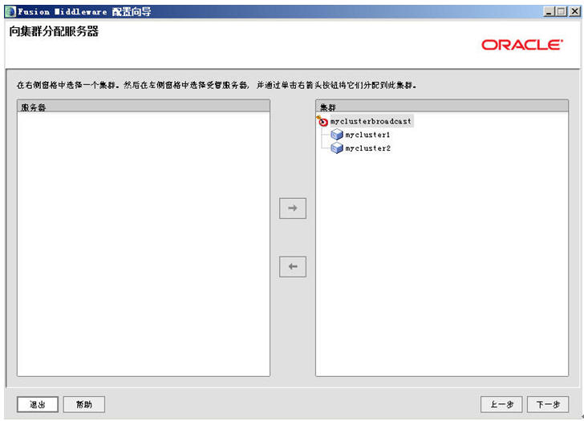
Look, 右边这块我们把它称为“集群的逻辑拓卜图”。
此处是对每个集群里的节点指定相应的“计算机名/IP”，由于我们的实验是建立在同一台机器上的即纵向集群，因此这步什么都不需要填，直接下一步。
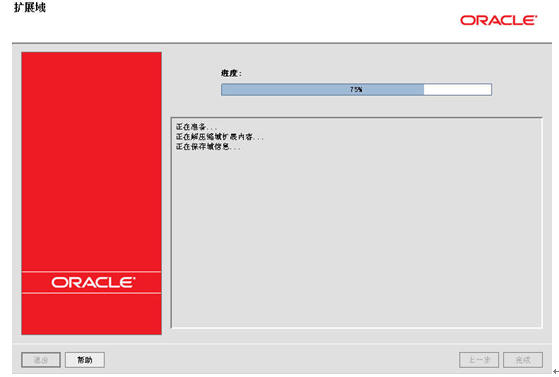
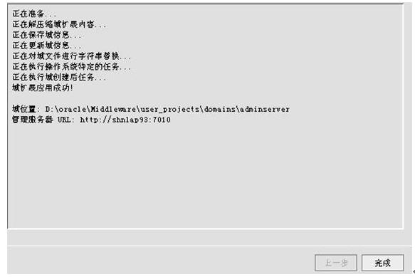
完成后可以启动adminserver
然后通过http://localhost:7001/console来查看我们的集群规划，如下图：
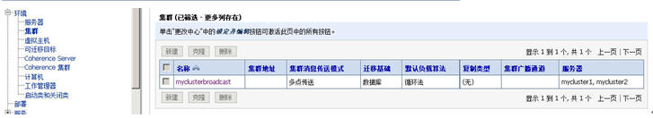
这样，我们就完成了创建一个新的domain并且将且扩展成为了集群的总控制端服务器，同时在这上面我们制作了一个“集群拓卜图”，那么下面要做的就是：
- 创建该集群拓卜图中的节点1
- 创建该集群拓卜图中的节点2
3.2 创建集群中的节点（mycluster1, mycluster2）
启动Weblogic的Configuration Wizard
按照普通的域，就是一个普通的域来创建（为了实验方便我们的用户名与密码全部为weblogic/password_1）：
- user_projects\domains\server1（逻辑名为：mycluster1，端口：7011）
- user_projects\domains\server2（逻辑名为：mycluster2，端口：7012）
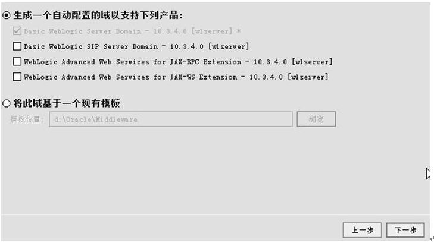
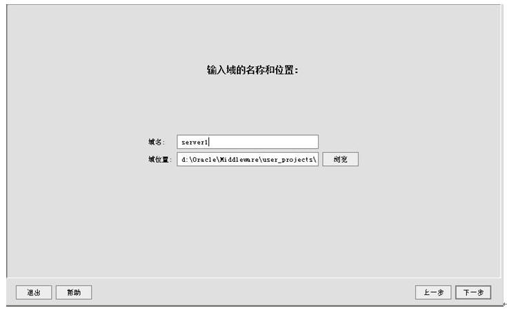
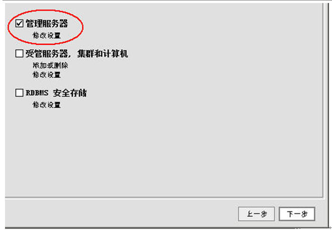
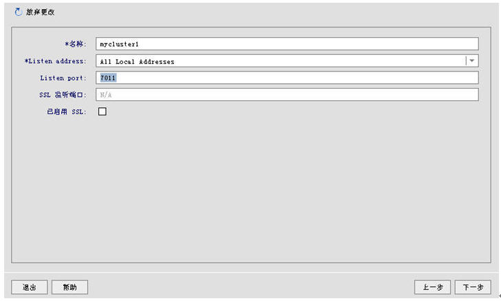
下一步，下一步，创建，完成。
依上面的相同步骤可以自行创建server2(逻辑名为mycluster2，端口:7012)。
3.3 如何启动集群
|
物理名 |
逻辑名 |
端口号 |
主机名（IP） |
登录信息 |
|
\bea\user_projects\domains\adminserver |
AdminServer |
7001 |
localhost |
weblogic/password_1 |
|
\bea\user_projects\domains\server1 |
mycluster1 |
7011 |
localhost |
weblogic/password_1 |
|
bea\user_projects\domains\server2 |
mycluster2 |
7012 |
localhost |
weblogic/password_1 |
我们看着上面这个表格来输入命令吧:
1. 启动主控域（必须永远先启动主控域）
2. 启动节点1（间点间的启动顺序无所谓）
3. 启动节点2（间点间的启动顺序无所谓）
全部启动完毕后就可以通过主控制域的admin console即http://localhost:7001/console来管理这个集群了。
四、jdbc集群
有了集群，我们就可以布署我们的JDBC了，只是这个JDBC的布署和以前单机版的JDBC布署稍稍有点不一样，前面我们引用第八天中的建立JDBC的步骤：
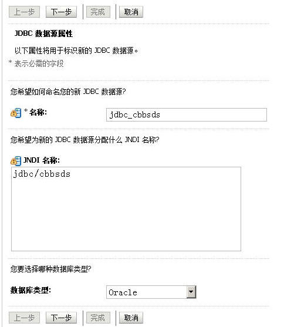
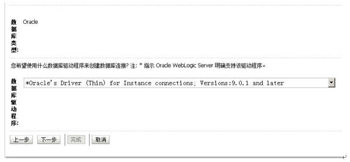
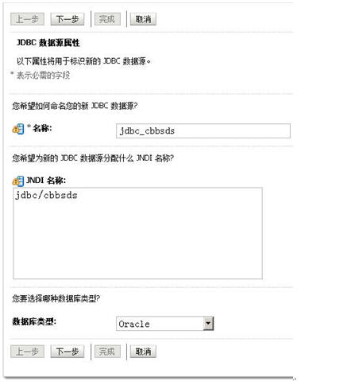
好好好，停，到了这边，不一样的地方来了。
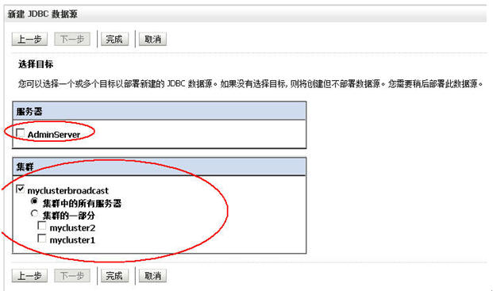
嘿嘿，千万不要把这个JDBC连接池的“target”即作用域设错了哈，我们现在是集群，要把这个JDBC连接池的作用域设在我们的集群上的哈！
我们来测试一下我们建立的数据源吧。
两个cluster上的数据源全部部署成功。
这边再提一句：
集群布署的话AdminServer只是一个控制器，通过它布署的war程序是自动同步到挂在它下面的所有的节点中去的，因此JDBC数据源，或者JMS或者是EJB都要在绑定是把target即作用域设成cluster而不是AdminServer本身，因为AdminServer本身不会布署任何任何东西的。
五、把工程布署到集群环境中去
- 确保我们将要布署的工程中的web.xml的最后一行含有：
|
<distributable/> |
- 在将要布署的工程的WEB-INF目录下新建一个weblogic.xml的文件，其内容如下：
|
<?xml version="1.0" encoding="UTF-8"?> <weblogic-web-app xmlns="http://www.bea.com/ns/weblogic/90"> <session-descriptor> <debug-enabled>true</debug-enabled> <persistent-store-type>replicated</persistent-store-type> <sharing-enabled>true</sharing-enabled> </session-descriptor> <context-root>/cbbs</context-root> </weblogic-web-app> |
该内容使得你的工程可以在Weblogic集群环境下进行Session复制。
然后就可以开始布署了
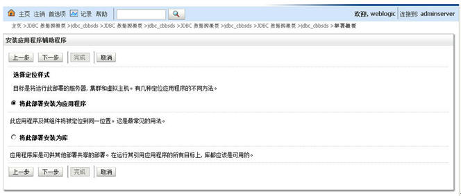
下面又来了，和在集群中布署JDBC是一样的，请看：
下一步，下一步一直到[完成]按钮亮起来后，点[完成]。
点[保存]并[激活更改]。
大家来看看两个cluster即mycluster1与mycluster2下是否被布署了工程，即相当于我们手工要在两个tomcat节点的webapps目录里拷入我们的WAR工程，而weblogic只需要通过主控制域，自动将war工程布署在其下的所有子节点内。
是的，果然，它自动布署了。就算我下面有10几个子节点，它也一样只需要在AdminServer上布署一次，自动同步。
我们把这个工程启动起来吧。
当你一点“为所有请求提供服务，再来看两个字节点的后台console，都可以同步启动了：
布署成功
打开两个IE：
一个输入: http://localhost:7011/cbbs
一个输入: http://localhost:7012/cbbs
Weblogic集群布署成功，接下去就是在Apache里进行派发了
六、使用Apache与Weblogic集群整合
打开httpd.conf，把下面这段就是我们在“第九天”中加入的，去掉：
|
LoadModule weblogic_module modules/mod_wl_22.so <IfModule mod_weblogic.c> WebLogicHost localhost WebLogicPort 7001 MatchExpression /cbbs/WEB-INF MatchExpression /cbbs/*WEB-INF MatchExpression /cbbs/*.action MatchExpression /cbbs/servlet/* MatchExpression /cbbs/*.jsp MatchExpression /cbbs/*fckeditor/editor/filemanager/connectors/*.* MatchExpression /cbbs/fckeditor/editor/filemanager/connectors/* WLLogFile logs/wlproxy.log </IfModule> |
换成下面这一段
|
LoadModule weblogic_module modules/mod_wl_22.so <IfModule mod_weblogic.c> Include conf/weblogic.conf </IfModule> |
然后在apache安装的conf目录下手工建立weblogic.conf文件，其内容如下：
|
WeblogicCluster localhost:7011,localhost:7012
MatchExpression /cbbs/WEB-INF MatchExpression /cbbs/*WEB-INF MatchExpression /cbbs/*.action MatchExpression /cbbs/servlet/* MatchExpression /cbbs/*.jsp MatchExpression /cbbs/*fckeditor/editor/filemanager/connectors/*.* MatchExpression /cbbs/fckeditor/editor/filemanager/connectors/*
|
重启你的Apache，输入：http://localhost/cbbs/index.jsp
Apache加Weblogic集群，搞定！
七、JMS集群
这是我在用Weblogic集群布署PEGA Rulz的详细步骤，供各为参考。因为网上关于JMS在Weblogic下如何作集群不是太多，因此把步骤记录下来Share给大家。
JMS集群和JDBC集群不一样，就是不能够直接建立JMS源，然后把它target到我们的myclusterbroadcast上去。
- 而是需要分别为每个cluster单独建一个jms的server如下图。
- 然后建立jmsmodule
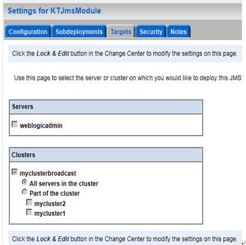
将module 的作用范围即target到我们的cluster（myclusterbroadcast）上去。
建立完了module你就要建立topic, queue以及相应的topic connection factory或者是queue connectionfactory了是吧？因为我们这边给PEGA Rulz做集群用的是topic方式来发布集群的，因此我们以topic为例，queue的建立也就一样了。
- 单击刚才我们建立的KTJmsModule
点[New]
先建connection factory
- 在新建connectionfactory的界面中有一个[高级定位]的按钮
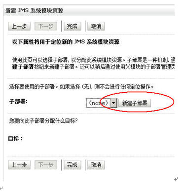
- 点[新建子部署]
填入完子布署的名称后，按照如下图来“target”
点完成后跳出如下的界面
此时我们可以开始真正建立我们的topic或者是queue了
前面说了不能够直接建立JMS源，然后把它target到我们的myclusterbroadcast上去。那么我们要对JMS进行集群即对Topic或者是Queue进行集群，但是我们可以建立一个Distribute Topic，然后分别建两个一边的topic，一个topic连向jmsserver1一个topic连向jmsserver2，然后把这个Distribute Topic定位（Target）到这两条topic上即是我们的“集群下的jms topic”。
在jmd module里点[新建]按钮
选择“主题”（不是分布式主题）
每个子部署（sub deployment）需要定位（target）到一个jms server上。
依此分别建立:
- topic1 subtop1->jmsserver1
- topic2 subtop2->jmsserver2
现在，我们的jms module里的内容因该如下图所示：
- 建立 “分布式主题”（DistributeTopic）
在jms module里点新建按钮，选“分布式主题”
一定要记得把“Destination Type”改成“Weighted”。
这边的分布式Topic的JNDI Name: 就是我们真正的需要用来做集群的JMS的Topic或者是Queue的jndi名，比如说我的产品PEGA Rulz需要在集群环境下用到RamTopicJNDI，这个JNDI Name就必须填产品说明书上的那个Topic或者是Queue的名字哦。
点下一步后将刚才两个新建的topic全部分配给这个distribute topic
点[完成]按钮
这样，一个集群环境下的JMS分布式主题(Topic)就全建完了，最后不要忘了点左边菜单上方的“激活更改”，保存您刚才的所有的更改。